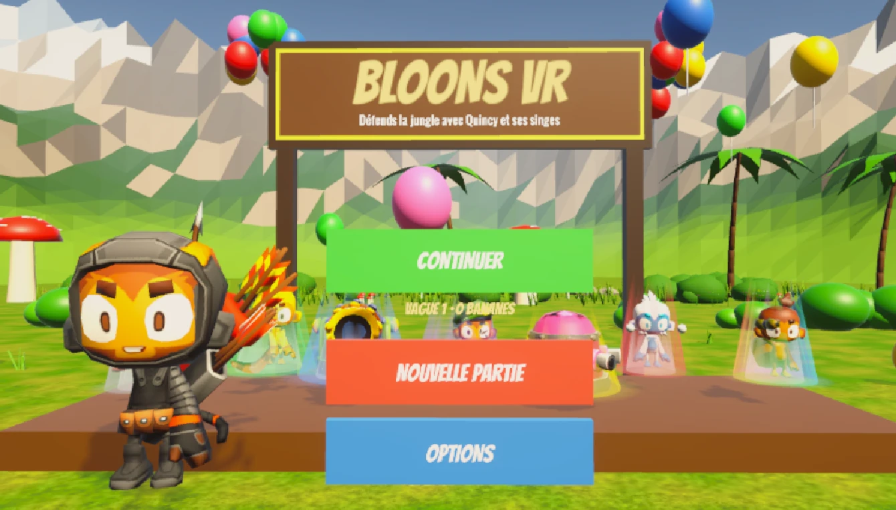
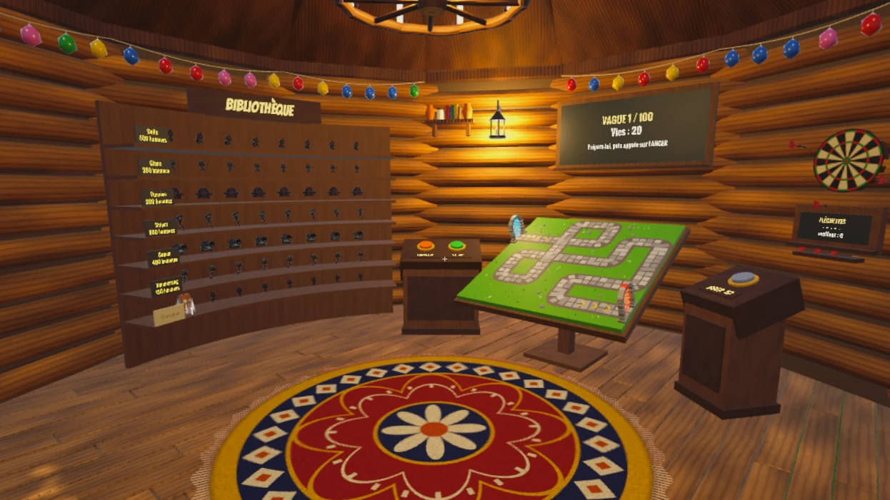
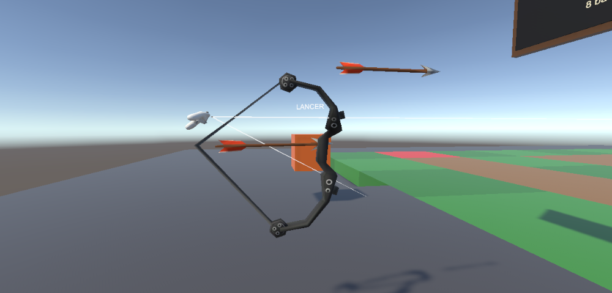
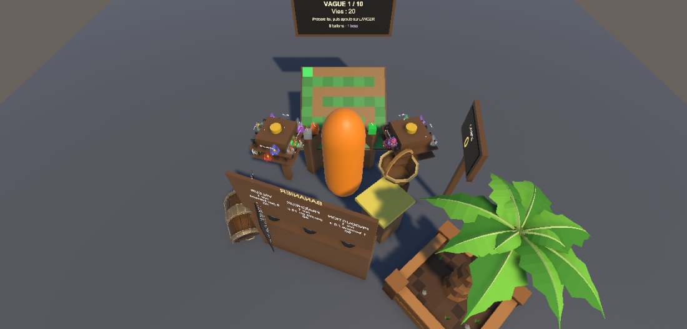
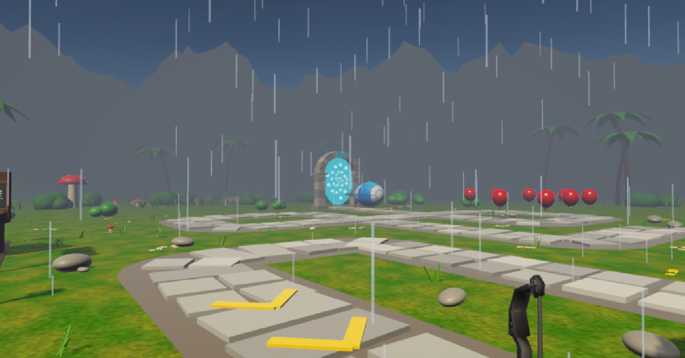
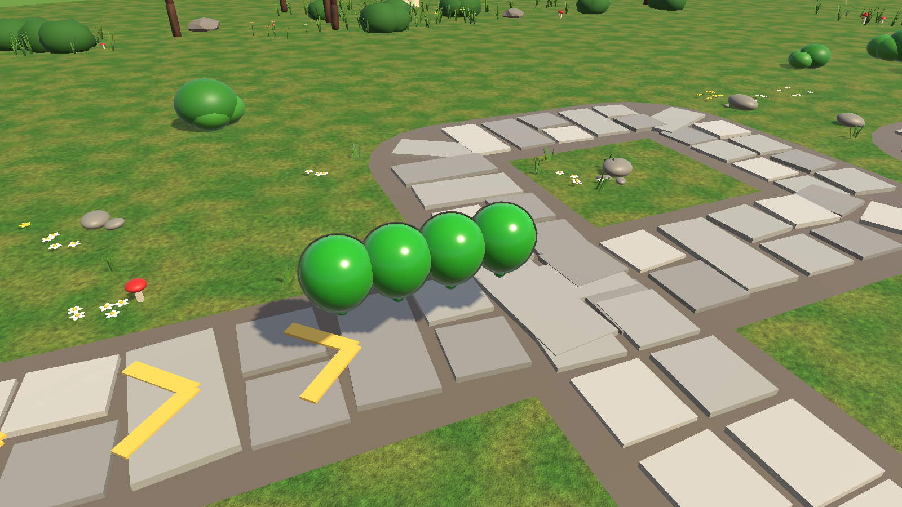
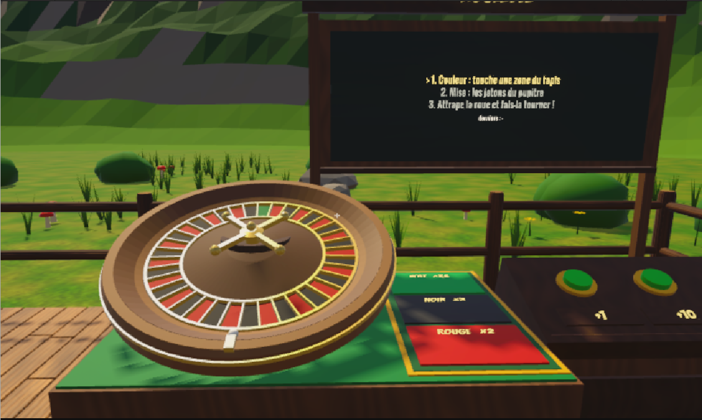
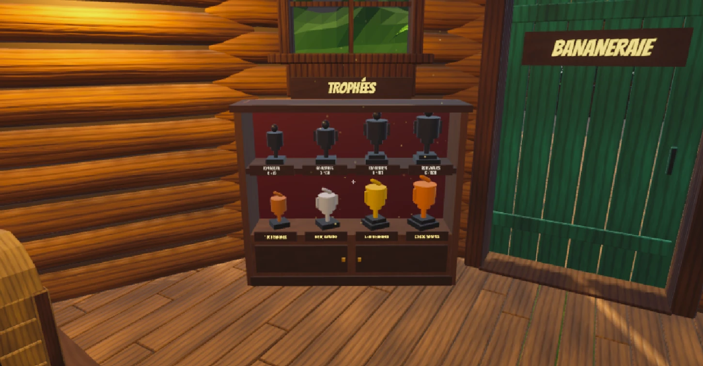
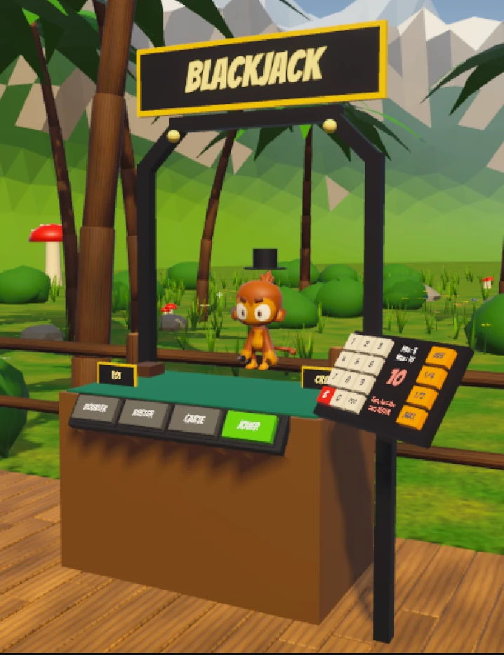
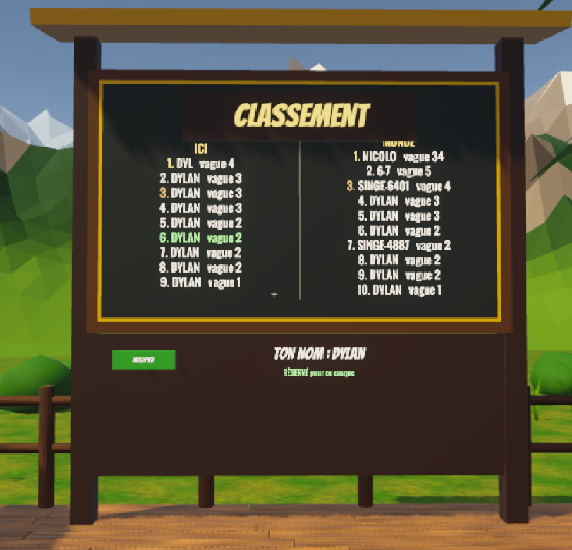

Défends la jungle avec Quincy et ses singes.
Oral du 13 novembre 2026 · 15 minutes + démo


La cabane : bibliothèque, maquette, tableau des vaguesConfort : téléportation, rotation par crans, textes dans le décor, tout à portée de bras, 72 fps visés

L'arc tendu
Tout est à portée de main
Orage des boss, il ne pleut pas dans la cabane
Les boss se divisent
Roulette lancée à la main
Armoire à trophées
Blackjack (coop)
Classement en ligneLe Quest n'était pas reconnu le 7 oct., donc on a testé sans casque au début.
Ce qu'on retient : réserver les casques tôt.
Des pull requests jamais fusionnées, qu'il a fallu trier.
Ce qu'on retient : branches courtes, fusion rapide.
Les testeurs ne jouaient pas vraiment au tower defense.
Ce qu'on a fait : vagues plus dures, ballons camouflés.
S3 : on a fini plutôt qu'ajouté. Restent à mesurer : les 72 fps au casque et le coop à deux.
Merci · des questions ?